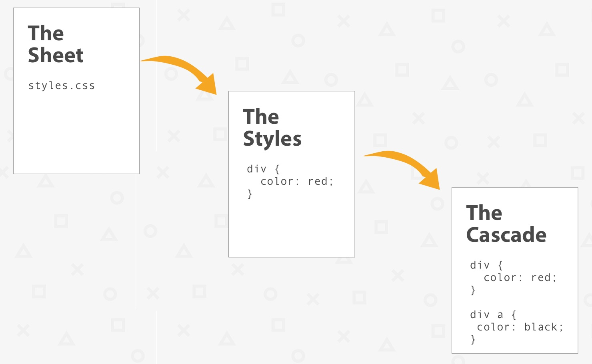
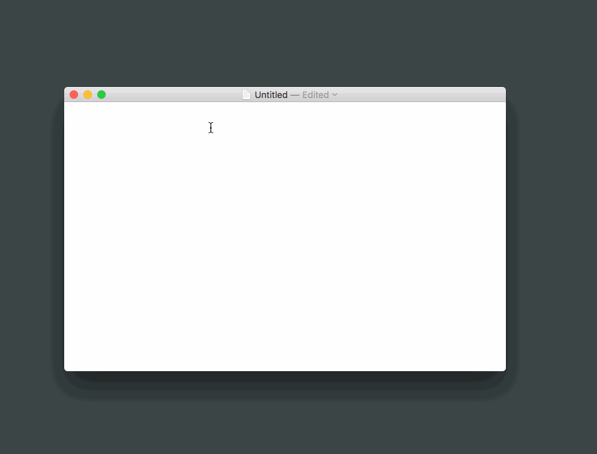

CSS Basics: The Second “S” in CSS
CSS is an abbreviation for Cascading Style Sheets.
While most of the discussion about CSS on the web (or even here on CSS-Tricks) is centered around writing styles and how the cascade affects them, what we don’t talk a whole lot about is the sheet part of the language. So let’s give that lonely second “S” a little bit of the spotlight and understand what we mean when we say CSS is a style sheet.
The Sheet Contains the Styles
The cascade describes how styles interact with one another. The styles make up the actual code. Then there’s the sheet that contains that code. Like a sheet of paper that we write on, the “sheet” of CSS is the digital file where styles are coded.
If we were to illustrate this, the relationship between the three sort of forms a cascade:
There can be multiple sheets all continuing multiple styles all associated with one HTML document. The combination of those and the processes of figuring out what styles take precedence to style what elements is called the cascade (That first “C” in CSS).
The Sheet is a Digital File
The sheet is such a special thing that it’s been given its own file extension: .css. You have the power to create these files on your own. Creating a CSS file can be done in any text editor. They are literally text files. Not “rich text” documents or Word documents, but plain ol’ text.
If you’re on Mac, then you can fire up TextEdit to start writing CSS. Just make sure it’s in “Plain Text” mode.
If you’re on Windows, the default Notepad app is the equivalent. Heck, you can type styles in just about any plain text editor to write CSS, even if that’s not what it says it was designed to do.
Whatever tool you use, the key is to save your document as a .css file. This can usually be done by simply add that to your file name when saving. Here’s how that looks in TextEdit:
Seriously, the choice of which text editor to use for writing CSS is totally up to you. There are many, many to choose from, but here are a few popular ones:
- Sublime Text
- atom
- VIM
- PhPStorm
- Coda
- Dreamweaver
You might reach for one of those because they’ll do handy things for you like syntax highlight the code (colorize different parts to help it be easier to understand what is what).
Hey look I made some files completely from scratch with my text editor:
Those files are 100% valid in any web browser, new or old. We’ve quite literally just made a website.
The Sheet is Linked Up to the HTML
We do need to connect the HTML and CSS though. As in make sure the styles we wrote in our sheet get loaded onto the web page.
A webpage without CSS is pretty barebones:
How did that happen? if you look at the top of any webpage, there’s going to be a
tag that contains information about the HTML document:Even though the code inside the
might look odd, there is typically one line (or more, if we’re using multiple stylesheets) that references the sheet. It looks something like this:This line tells the web browser as it reads this HTML file:
I’d like to link up a style sheet
- Here’s where it is located
- You can name the sheet whatever you want:
- styles.css
- global.css
- seriously-whatever-you-want.css
The important thing is to give the correct location of the CSS file, whether that’s on your web server, a CDN or some other server altogether.
The Sheet is Not Required for HTML
You saw the example of a barebones web page above. No web page is required to use a stylesheet.
Also, we can technically write CSS directly in the HTML using the HTML style attribute. This is called inline styling and it goes a little something like this if you imagine you’re looking at the code of an HTML file:
While that’s possible, there are three serious strikes against writing styles this way
If you decide to use a stylesheet later, it is extremely difficult to override inline styles with the styles in the HTML. Inline styles take priority over styles in a sheet.
Maintaining all of those styles is tough if you need to make a “quick” change and it makes the HTML hard to read.
There’s something weird about saying we’re writing CSS inline when there really is no cascade or sheet. All we’re really writing are styles.
There is a second way to write CSS in the HTML and that’s directly in the
in a